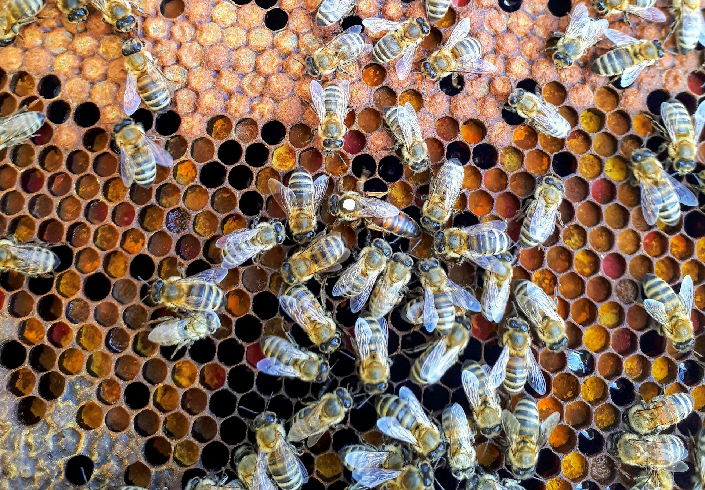
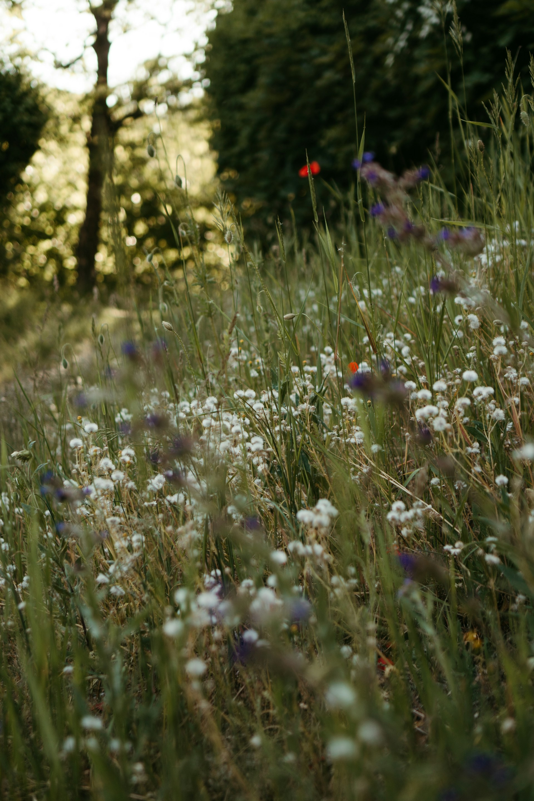
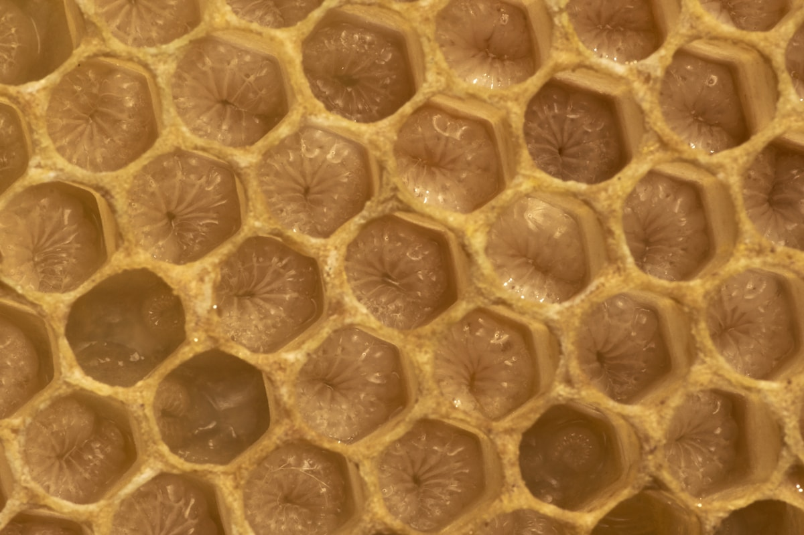

Slepičí hory · Jižní Čechy · Slow Food
Hühnerberge · Südböhmen · Slow Food
Slepičí Hory · South Bohemia · Slow Food
Chováme včely v přírodě Slepičích hor. Mezi buky, žulou a loukami přírodního parku v jižních Čechách.
Wir halten Bienen in der Natur der Hühnerberge. Zwischen Buchen, Granit und den Wiesen des Naturparks in Südböhmen.
We keep bees in the nature of Slepičí Hory. Among beech trees, granite and the meadows of a nature park in South Bohemia.
Naše včelnice
Unsere Imkerei
Our apiary
Slepičí hory jsou přírodní park v jižních Čechách, ukrytý mezi Kaplici a Trhovými Sviny. Žulové skály, bukové porosty, smrkové lesy a louky plné divokých květů — krajina, která vznikala tisíce let a dnes je domovem pro nespočet druhů.
Die Hühnerberge sind ein Naturpark in Südböhmen, versteckt zwischen Kaplice und Trhové Sviny. Granitfelsen, Buchenwälder, Fichtenforste und blumenreiche Wiesen — eine Landschaft, die Jahrtausende gewachsen ist und heute unzähligen Arten Heimat bietet.
Slepičí Hory is a nature park in South Bohemia, tucked between the towns of Kaplice and Trhové Sviny. Granite rocks, beech groves, spruce forests and meadows full of wild flowers — a landscape that took thousands of years to form and is home today to countless species.
V tomto prostředí chováme naše včelstva. Daleko od intenzivního zemědělství, průmyslu a pesticidů. Včely tu mají přístup k pestrému spektru rostlin — od jarního sněženky přes letní lipové květy až po podzimní vřes. Každý med nese otisk tohoto konkrétního místa.
In dieser Umgebung halten wir unsere Bienenvölker. Weit entfernt von intensiver Landwirtschaft, Industrie und Pestiziden. Die Bienen haben Zugang zu einem vielfältigen Pflanzenspektrum — vom Frühjahrsschneeglöckchen über die sommerlichen Lindenblüten bis zum Herbstheidekraut. Jeder Honig trägt den Fingerabdruck dieses besonderen Ortes.
This is where we keep our colonies. Far from intensive agriculture, industry and pesticides. The bees have access to a diverse range of plants — from spring snowdrops through summer linden blossom to autumn heather. Every honey carries the imprint of this specific place.
Přírodní park byl vyhlášen roku 1995. Nejvyšší vrchol — Kohout — dosahuje 871 metrů. Celé území odvodňuje řeka Malše. Je to místo, kde se čas zpomalil. Přesně to, co Slow Food hlásá.
Der Naturpark wurde 1995 ausgewiesen. Der höchste Gipfel — Kohout — erreicht 871 Meter. Das gesamte Gebiet entwässert in die Malše. Es ist ein Ort, wo die Zeit langsamer wird. Genau das, was Slow Food predigt.
The nature park was designated in 1995. The highest peak — Kohout — reaches 871 metres. The entire area drains into the Malše river. It is a place where time has slowed down. Exactly what Slow Food preaches.

Kdo jsme
Wer wir sind
Who we are
Nejsme profesionální včelaři ani výzkumníci. Jsme sousedé, kteří se rozhodli dělat věci jinak — s úctou k tomu, co včely potřebují ony, ne co potřebujeme my.
Wir sind keine professionellen Imker oder Forscher. Wir sind Nachbarn, die entschieden haben, die Dinge anders zu machen — mit Respekt für das, was Bienen brauchen, nicht was wir brauchen.
We are not professional beekeepers or researchers. We are neighbours who decided to do things differently — with respect for what bees need, not what we need.
Proč včely
Warum Bienen
Why bees matter
Včela medonosná je jedním z nejdůležitějších živočichů na planetě. Přestože váží sotva půl gramu, spoluvytváří základ naší potravinové bezpečnosti.
Die Honigbiene ist eines der wichtigsten Lebewesen auf unserem Planeten. Obwohl sie kaum einen halben Gramm wiegt, ist sie ein wesentlicher Grundstein unserer Ernährungssicherheit.
The honeybee is one of the most important creatures on the planet. Weighing barely half a gram, it underpins the foundation of our food security.
Celosvětově závisí na opylení hmyzem přes 75 % druhů kvetoucích rostlin a přibližně 35 % veškeré zemědělské produkce. V Evropě se hodnota opylování odhaduje na stovky miliard korun ročně — tichá práce, která se nikdy neobjevuje v účetních knihách.
Weltweit sind über 75 % der blühenden Pflanzenarten und rund 35 % aller landwirtschaftlichen Produktion auf die Bestäubung durch Insekten angewiesen. In Europa wird der Wert der Bestäubung auf Hunderte von Milliarden Kronen jährlich geschätzt — eine stille Arbeit, die nie in den Büchern erscheint.
Globally, over 75% of flowering plant species and around 35% of all agricultural production depend on insect pollination. In Europe alone, the value of pollination is estimated at hundreds of billions each year — quiet work that never appears in any ledger.
Bez včel bychom přišli o jablka, hrušky, třešně, borůvky, mandle, kávovník, slunečnici, řepku — seznam je téměř nekonečný. Jejich úbytek není jen ekologický problém. Je to problém civilizační.
Ohne Bienen würden wir Äpfel, Birnen, Kirschen, Heidelbeeren, Mandeln, Kaffee, Sonnenblumen und Raps verlieren — die Liste ist nahezu endlos. Ihr Rückgang ist nicht nur ein ökologisches Problem. Es ist ein zivilisatorisches Problem.
Without bees we would lose apples, pears, cherries, blueberries, almonds, coffee, sunflowers, oilseed rape — the list is nearly endless. Their decline is not just an ecological problem. It is a civilisational one.

Slow Food & včely
Slow Food & Bienen
Slow Food & bees
Filosofie Slow Food stojí na třech pilířích: dobré, čisté a spravedlivé. Med je jejich dokonalým ztělesněním. Každá sklenice je zápisníkem krajiny — nese v sobě pyl místních rostlin, vůni konkrétního léta, otisk biodiverzity toho místa.
Die Slow-Food-Philosophie basiert auf drei Säulen: gut, sauber und fair. Honig ist ihre perfekte Verkörperung. Jedes Glas ist ein Tagebuch der Landschaft — es trägt den Pollen lokaler Pflanzen, den Duft eines bestimmten Sommers, den Fingerabdruck der Biodiversität dieses Ortes in sich.
Slow Food philosophy rests on three pillars: good, clean and fair. Honey is their perfect embodiment. Each jar is a notebook of the land — it carries the pollen of local plants, the scent of a particular summer, the imprint of that place's biodiversity.
Průmyslový med — ohřátý, přefiltrovaný, smíšený z neznámých zdrojů — tuto paměť ztrácí. Lokální med od malého včelaře je pravým opakem: transparentní, živý, neopakovatelný.
Industrieller Honig — erhitzt, überfiltriert, aus unbekannten Quellen gemischt — verliert dieses Gedächtnis. Lokaler Honig von einem kleinen Imker ist das genaue Gegenteil: transparent, lebendig, unwiederholbar.
Industrial honey — heated, over-filtered, blended from unknown sources — loses this memory. Local honey from a small beekeeper is the exact opposite: transparent, alive, unrepeatable.
„Zachránit včelu znamená zachránit krajinu. A zachránit krajinu znamená zachránit nás."
„Eine Biene zu retten bedeutet, eine Landschaft zu retten. Und eine Landschaft zu retten bedeutet, uns selbst zu retten."
"To save a bee is to save a landscape. And to save a landscape is to save ourselves."Carlo Petrini, Slow Food
Včely jsou pro Slow Food symbolem celého hnutí: malý, nenápadný živočich, jehož práce je zásadní a jehož zmizení bychom pocítili na každém talíři. Podpora lokálního včelaření je přímým činem v duchu Slow Food.
Bienen sind für Slow Food das Symbol der gesamten Bewegung: Ein kleines, unscheinbares Tier, dessen Arbeit grundlegend ist und dessen Verschwinden wir auf jedem Teller spüren würden. Die Unterstützung lokaler Imkerei ist eine direkte Handlung im Geiste von Slow Food.
Bees are for Slow Food the symbol of the entire movement: a small, unassuming creature whose work is fundamental, and whose disappearance we would feel on every plate. Supporting local beekeeping is a direct act in the spirit of Slow Food.
Co včely ohrožuje
Was Bienen bedroht
What threatens bees
Od počátku 21. století zmizel každý třetí divoký opylovač v Evropě. Přitom příčiny jsou dobře známé.
Seit Beginn des 21. Jahrhunderts ist jeder dritte Wildbestäuber in Europa verschwunden. Dabei sind die Ursachen gut bekannt.
Since the start of the 21st century, one in three wild pollinators in Europe has vanished. The causes are well understood.
Pesticidy a herbicidy — zejména neonikotinoidy narušují orientaci včel a jejich schopnost nacházet cestu zpět do úlu. EU část z nich zakázala, ale problém přetrvává.
Pestizide und Herbizide — insbesondere Neonikotinoide stören die Orientierung der Bienen und ihre Fähigkeit, den Weg zurück zum Stock zu finden. Die EU hat einige davon verboten, aber das Problem besteht fort.
Pesticides and herbicides — neonicotinoids in particular disrupt bees' navigation and their ability to find their way back to the hive. The EU has banned some of them, but the problem persists.
Úbytek habitatů — intenzivní zemědělství proměnilo krajinu v monokulturní plochy. Mizí meze, louky, remízky — místa, kde včely nachází potravu a úkryt.
Habitatverlust — intensive Landwirtschaft hat die Landschaft in monokulturelle Flächen verwandelt. Feldraine, Wiesen und Hecken verschwinden — Orte, wo Bienen Nahrung und Schutz finden.
Habitat loss — intensive farming has turned the landscape into monocultural expanses. Field margins, meadows, and copses disappear — the places where bees find food and shelter.
Roztoč Varroa — parazit, který decimuje včelstva po celém světě. Pro včelaře je každoroční boj s varroou součástí rutiny. Pro divoké včely neexistuje pomoc žádná.
Varroa-Milbe — ein Parasit, der Bienenvölker auf der ganzen Welt dezimiert. Für Imker ist der jährliche Kampf gegen Varroa Teil der Routine. Für Wildbienen gibt es keine Hilfe.
Varroa mite — a parasite that decimates colonies worldwide. For beekeepers, the annual fight against varroa is routine. For wild bees, there is no help at all.
Klimatická změna — posouvá kvetení rostlin a aktivitu včel mimo synchron. Včela přiletí, květ odkvéte. Květ vykvete, včely ještě neletí.
Klimawandel — verschiebt die Blütezeit der Pflanzen und die Aktivität der Bienen außer Sync. Die Biene kommt, die Blüte ist verblüht. Die Blüte erblüht, die Bienen fliegen noch nicht.
Climate change — shifts plant flowering and bee activity out of sync. The bee arrives; the blossom is over. The blossom opens; the bees are not yet flying.
Co můžeš udělat
Was du tun kannst
What you can do
Pomoci včelám neznamená stát se včelařem. Stačí malé, vědomé kroky.
Den Bienen zu helfen bedeutet nicht, Imker zu werden. Es genügen kleine, bewusste Schritte.
Helping bees does not mean becoming a beekeeper. Small, conscious steps are enough.
Ze včelnice
Aus dem Bienenstock
From the apiary